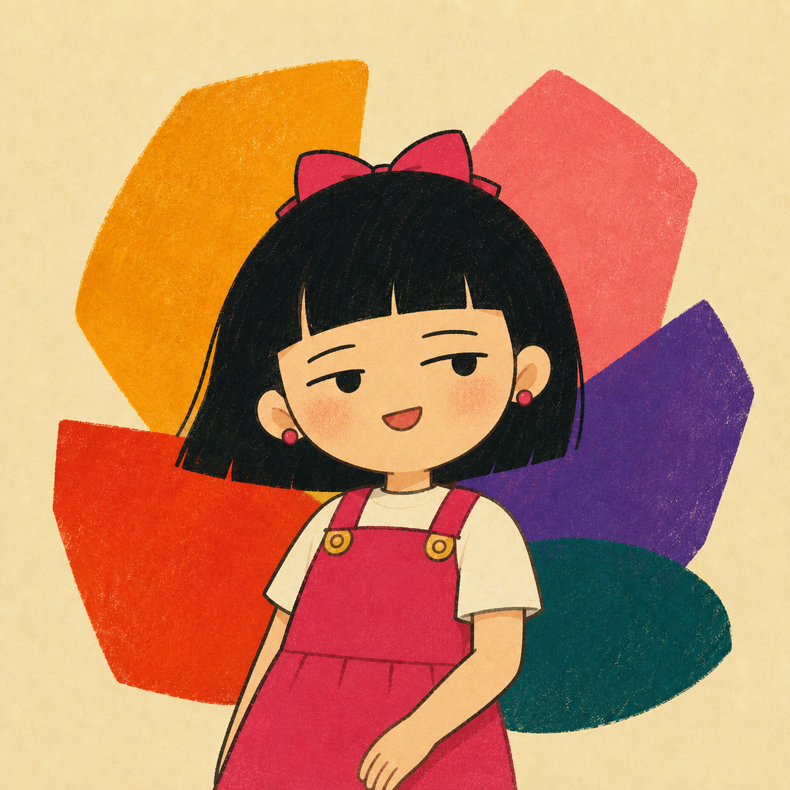

Radio astronomy · AI · mentoring · neurodiversity
Making sense of the radio sky, and making research spaces easier to stay in.
I am Dr Haoyang Ye, an astronomer working on radio imaging, AI-assisted source classification, and the tools that help researchers turn messy sky data into usable knowledge. I also care about mentoring, access, and neurodivergent people being able to do serious work without having to disappear inside the system.

Start here
Four connected parts of my work.
01
Research
Radio imaging methods, AI x radio astronomy, source classification, and infrastructure.
02
AstroCareer Talk Series
Open career conversations for astronomy, astrophysics, and cosmology researchers.
03
Neurodiversity Workbook
A local-first workbook library for mapping energy, sensory needs, learning, and values.
04
Students
Research topics, mentoring expectations, and practical resources for students.